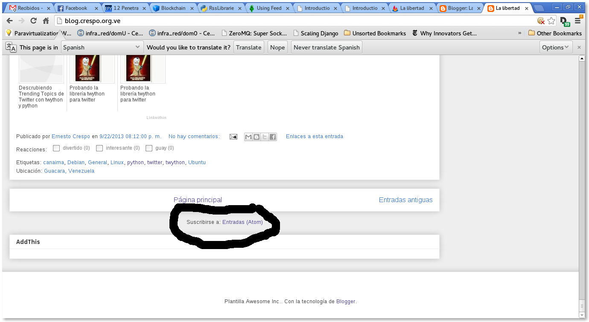

Feliz año a todos. Tenía algo de tiempo sin escribir en el blog.
Este artículo trata del como usar la librería Feedparser para extraer información del RSS de este blog.
Al final del blog (blog.crespo.org.ve) aparece la suscripción al Blog por medio de Atom (ver imagen):

Al darle clip al enlace aparece lo siguiente (http://feeds.feedburner.com/LaLibertadDeDesarrollarNoTienePrecio):

El blog está sindicalizado desde FeedBurner.
La idea es utilizar la librería feedparser para extraer información de la sindicalización del blog.
Se importa la librería feedparser:
>>>import feedparser
Se instancia la clase parse con el url de la sindicalización del blog:
>>>d = feedparser.parse('http://feeds.feedburner.com/LaLibertadDeDesarrollarNoTienePrecio')
Se muestra el título del blog:
>>> d['feed']['title']
u'La libertad de desarrollar no tiene precio...'
Otra forma de obtener el título del blog:
>>> d.feed.title
u'La libertad de desarrollar no tiene precio...'
Enlace del blog:
>>> d.feed.link
u'http://blog.crespo.org.ve/'
Descripción del blog:
>>> d.feed.description
u'Blog dedicado al Software Libre en especial Linux Debian, Android y FreeBSD, a la programaci\xf3n en python con gtk, qt y en Android.'
Elementos del diccionario:
>>> d.keys()
['feed', 'status', 'updated', 'updated_parsed', 'encoding', 'bozo', 'headers', 'etag', 'href', 'version', 'entries', 'namespaces']
Para obtener el author del blog, se ejecuta author en feed:
>>> d.feed.author
u'Ernesto Crespo (noreply@blogger.com)'
La codificación del texto del blog es UTF-8:
>>> d.encoding
u'UTF-8'
Estatus:
>>> d.status
200
Actualización:
>>> d.updated
'Sun, 19 Jan 2014 00:03:47 GMT'
En este caso devuelve la hora pero la información separada:
>>> d.updated_parsed
time.struct_time(tm_year=2014, tm_mon=1, tm_mday=19, tm_hour=0, tm_min=3, tm_sec=47, tm_wday=6, tm_yday=19, tm_isdst=0)
Encabezados del blog:
>>> d.headers
{'alternate-protocol': '80:quic', 'x-xss-protection': '1; mode=block', 'x-content-type-options': 'nosniff', 'expires': 'Sun, 19 Jan 2014 01:01:50 GMT', 'server': 'GSE', 'last-modified': 'Sun, 19 Jan 2014 00:03:47 GMT', 'connection': 'close', 'etag': 'hSh9ZbFEawbSc3BqlNVkqha27os', 'cache-control': 'private, max-age=0', 'date': 'Sun, 19 Jan 2014 01:01:50 GMT', 'content-type': 'text/xml; charset=UTF-8'}
Enlace:
>>> d.href
u'http://feeds.feedburner.com/LaLibertadDeDesarrollarNoTienePrecio'
Tipo de RSS (Atom1.0):
>>> d.version
u'atom10'
Cantidad de entradas:
>>> len(d.entries)
25
Si se desea obtener el título de la última entrada en el blog:
>>> d.entries[0].title
u'Webscraping con Python Mechanize y BeautifulSoup4'
Si se desea ver el contenido de la última entrada ( en html) :
>>> d.entries[0]
.....
'guidislink': True, 'published': u'2013-10-29T03:30:00.000-04:30', u'thr_total': u'0'}
Devuelve un diccionario con dentro código html e información adicional.
Para obtener el link del último artículo:
>>> d.entries[0].link
u'http://feedproxy.google.com/~r/LaLibertadDeDesarrollarNoTienePrecio/~3/A9jUi9ATI2g/webscraping-con-python-mechanize-y.html'
La fecha de publicación del último artículo:
>>> d.entries[0].published
u'2013-10-29T03:30:00.000-04:30'
El id del último artículo:
>>> d.entries[0].id
u'tag:blogger.com,1999:blog-882744969176160062.post-8013337259867824164'
Si se desea listar los últimos 25 artículos con su título y enlace se ejecuta un ciclo:
>>> for post in d.entries:
... print post.title + ": " + post.link + "\n"
...
Webscraping con Python Mechanize y BeautifulSoup4: http://feedproxy.google.com/~r/LaLibertadDeDesarrollarNoTienePrecio/~3/A9jUi9ATI2g/webscraping-con-python-mechanize-y.html
Extracción de datos con Scraperwiki y Python: http://feedproxy.google.com/~r/LaLibertadDeDesarrollarNoTienePrecio/~3/UbQD5y9jbr0/extraccion-de-datos-con-scraperwiki-y.html
Extracción de datos de página web con pyquery y Python: http://feedproxy.google.com/~r/LaLibertadDeDesarrollarNoTienePrecio/~3/1QbC7CmSqpk/extraccion-de-datos-de-pagina-web-con.html
Extracción de datos de páginas web con Scrapemark y Python: http://feedproxy.google.com/~r/LaLibertadDeDesarrollarNoTienePrecio/~3/g2iUGraxW0M/extraccion-de-datos-de-paginas-web-con.html
Extracción de datos en páginas web con Webscraping y Python: http://feedproxy.google.com/~r/LaLibertadDeDesarrollarNoTienePrecio/~3/W9NyMTnRYok/extraccion-de-datos-en-paginas-web-con.html
Webscraping o extracción de datos de páginas web con BeautifulSoup4 y Python: http://feedproxy.google.com/~r/LaLibertadDeDesarrollarNoTienePrecio/~3/xFr0x9bSo7E/webscraping-o-extraccion-de-datos-de.html
Un introducción a Beautiful Soup 4 en Python.: http://feedproxy.google.com/~r/LaLibertadDeDesarrollarNoTienePrecio/~3/_7MGtsSCnPg/un-introduccion-beautiful-soup-4-en.html
Obtener información de metadatos EXIF de una imagen con Python: http://feedproxy.google.com/~r/LaLibertadDeDesarrollarNoTienePrecio/~3/8U6SjV9RS-w/obtener-informacion-de-metadatos-exif.html
Mostrar tweets en tiempo real con twython y el API Stream de Twitter: http://feedproxy.google.com/~r/LaLibertadDeDesarrollarNoTienePrecio/~3/jdMIKN04gDs/mostrar-tweets-en-tiempo-real-con.html
Descrubiendo Trending Topics de Twitter con twython y python: http://feedproxy.google.com/~r/LaLibertadDeDesarrollarNoTienePrecio/~3/hfKN5Cat5Hw/descrubiendo-trending-topics-de-twitter.html
Probando la librería twython para twitter: http://feedproxy.google.com/~r/LaLibertadDeDesarrollarNoTienePrecio/~3/qfv-BUMniFA/probando-la-libreria-twython-para.html
Manejo de sesión en el ORM sqlalchemy: http://feedproxy.google.com/~r/LaLibertadDeDesarrollarNoTienePrecio/~3/OjR1D7SxjGQ/manejo-de-sesion-en-el-orm-sqlalchemy.html
Bajar vídeos de youtube desde Python con Pafy.: http://feedproxy.google.com/~r/LaLibertadDeDesarrollarNoTienePrecio/~3/IV42QCqWZA8/bajar-videos-de-youtube-desde-python.html
Día Debian en Barquisimeto: http://feedproxy.google.com/~r/LaLibertadDeDesarrollarNoTienePrecio/~3/fK8Q4DtjW8c/dia-debian-en-barquisimeto.html
Nodos más influenyes en un grafo con networkx. Parte 4.: http://feedproxy.google.com/~r/LaLibertadDeDesarrollarNoTienePrecio/~3/knGC3Agy03M/nodos-mas-influenyes-en-un-grafo-con.html
Mejorar la privacidad en celulares y tabletas con Android: http://feedproxy.google.com/~r/LaLibertadDeDesarrollarNoTienePrecio/~3/WHiecOQggP4/mejorar-la-privacidad-en-celulares-y.html
Graficar la tangente de una curva con python, numpy y pylab.: http://feedproxy.google.com/~r/LaLibertadDeDesarrollarNoTienePrecio/~3/YB9pcnkSjPg/graficar-la-tangente-de-una-curva-con.html
Utilizando el API de Stream de Twitter con Python y tweetstream. Parte 1.: http://feedproxy.google.com/~r/LaLibertadDeDesarrollarNoTienePrecio/~3/4XndFuAR-wQ/utilizando-el-api-de-stream-de-twitter.html
Máquinas virtuales con kvm y qemu: http://feedproxy.google.com/~r/LaLibertadDeDesarrollarNoTienePrecio/~3/hBovEziYwnM/maquinas-virtuales-con-kvm-y-qemu.html
Descubriendo trending topics de twitter con python-twitter.: http://feedproxy.google.com/~r/LaLibertadDeDesarrollarNoTienePrecio/~3/kAqQ7BRC_4w/descubriendo-trending-topics-de-twitter.html
Descubrir equipos en una Red Local con Python (ipcalc y scapy).: http://feedproxy.google.com/~r/LaLibertadDeDesarrollarNoTienePrecio/~3/KSulfIHpfaA/descubrir-equipos-en-una-red-local-con.html
Resolución de sistemas de ecuaciones lineales por descomposión QR usando Numpy: http://feedproxy.google.com/~r/LaLibertadDeDesarrollarNoTienePrecio/~3/KJ6mmAemwzk/resolucion-de-sistemas-de-ecuaciones.html
Creación de gráfico de burbujas con matplotlib: http://feedproxy.google.com/~r/LaLibertadDeDesarrollarNoTienePrecio/~3/Lu7ps2Z-zQI/creacion-de-grafico-de-burbujas-con.html
Manejar información de un archivo csv con csvkit: http://feedproxy.google.com/~r/LaLibertadDeDesarrollarNoTienePrecio/~3/6opCWEx9RoU/manejar-informacion-de-un-archivo-csv.html
Teorema de muestreo explicado con numpy: http://feedproxy.google.com/~r/LaLibertadDeDesarrollarNoTienePrecio/~3/VoY_nZzRtwY/teorema-de-muestreo-explicado-con-numpy.html
De está forma se puede acceder con python al RSS de blogs. En próximo artículo se buscará recortar los urls desde python.
¡Haz tu donativo! Si te gustó el artículo puedes realizar un donativo con Bitcoin (BTC) usando la billetera digital de tu preferencia a la siguiente dirección: 17MtNybhdkA9GV3UNS6BTwPcuhjXoPrSzV
O Escaneando el código QR desde la billetera:

Comments !